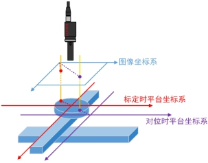

如图1，多次对位过程中，对象平台拍照时轴位置将不断发生变化，此时需要根据对象平台的拍照轴位置变化对目标平台进行补偿。目标对位补偿工具_多次对位专用工具就是用于该场景。

该工具原理为：对于每次对位中的对象平台轴位置的迭代变化，通过对象平台的标定结果将该偏移量进行切变校正，而后将校正后的偏移量补偿到平台坐标上，从而得到补偿修正后的平台坐标。
| 分类 | 参数名称 | 参数描述 |
|---|---|---|
| 属性窗口 | 无 | 无 |
| 图像窗口 | 无 | 无 |
| 数据链 | 目标平台坐标 | 待修正的最初目标平台坐标。 |
| 对象平台标定结果 | 对象平台的标定结果，主要用于修正切变 | |
| 标定时对象平台拍照轴位置 | 标定时对象平台在拍照时的轴位置 | |
| 对位时对象平台拍照轴位置 | 实际对位时对象平台在拍照时的轴位置 | |
| 对象平台轴方向 | 对象平台轴的方向 | |
| 高级界面 | 无 | 无 |
| 分类 | 参数名称 | 参数描述 |
|---|---|---|
| 监视窗口 | 目标平台坐标输出 | 修正的目标平台坐标向量结果。 |
| 执行结果 | 工具执行结果。 | |
| 执行时间 | 工具执行时间。 | |
| 图像窗口 | 无 | |
| 数据链 | 目标平台坐标输出 | 修正的目标平台坐标向量结果。供后序工具使用，同监视窗口。 |
无
参见“\Samples\目标对位补偿工具_多次对位专用.gvp”。